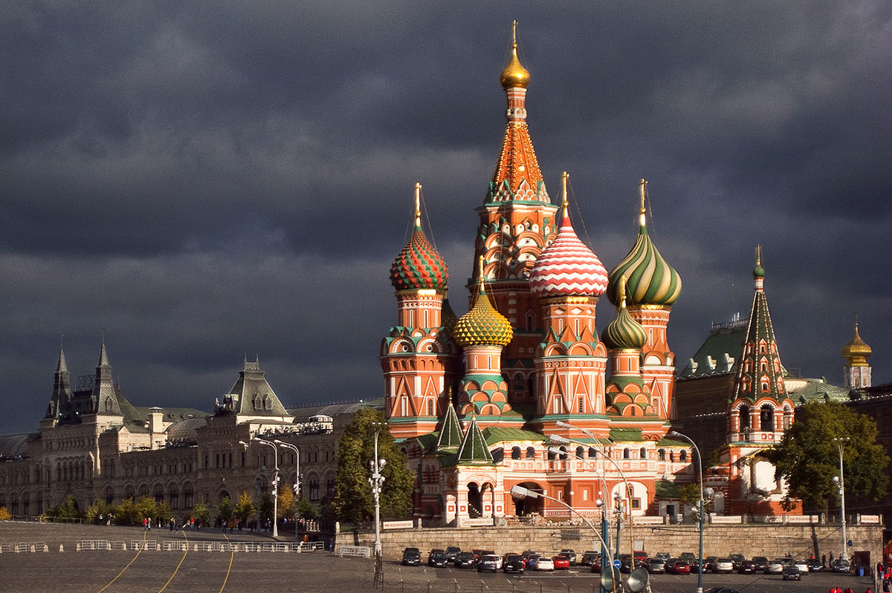

В первую очередь, из-за его природной уникальности. Это самое глубокое озеро в мире, с крупнейшим запасом чистейшей пресной воды и уникальной экосистемой. Помимо природы, Байкал — одно из самых известных мест силы в нашей стране. По берегам озера расположены десятки священных мест для шаманов и буддистов.
Камчатка заслуженно входит не только в список семи природных чудес России, но и в перечень объектов ЮНЕСКО. Правда, из-за удалённости региона ежегодно сюда приезжает всего около 200 000 туристов. 10% из них составляют иностранные граждане.
Эльбрус попал в рейтинг семи чудес России не случайно. Помимо уникальной природы и отличных горнолыжных курортов в Приэльбрусье, это еще и высочайшая гора Европы! Она также входит в список «7 вершин мира» — по одной самой высокой на каждом континенте.
Столбы выветривания в Коми — заключительная природная достопримечательность, попавшая в финал проекта «Семь чудес России». Этот геологический памятник природы находится в горах Северного Урала на плато с загадочным названием Маньпупунёр. С языка народа манси его название переводится как «малая гора идолов».
И, конечно, первый из них и самый крупный памятник России и Европы — Родина-мать на Мамаевом кургане в Волгограде. С момента установки в 1967 году и на протяжении 22 лет она считалась самой высокой статуей в мире! За это памятник был внесен в Книгу рекордов Гиннеса. Общая высота статуи — 85 метров: сама фигура вытянулась на 50 метров, еще на 20 метров взмыла вверх ее рука.

Храм Василия Блаженного — один из самых узнаваемых памятников Москвы наравне с Кремлем. Он также относится к объектам Всемирного наследия ЮНЕСКО. Из этого становится понятно, почему же храм оказался среди главных чудес России. Правда, название «храм Василия Блаженного» — разговорное, официально его именуют Собором Покрова Пресвятой Богородицы.
Проект «Семь чудес России» не обошел вниманием и вторую столицу страны — Санкт-Петербург. В перечень уникальных мест был включен дворцово-парковый ансамбль Петергоф. К слову, Петергоф входит и в число объектов Всемирного наследия ЮНЕСКО. Ну а на весь мир он знаменит не только своими дворцами и парками, но, в первую очередь, крупнейшей системой фонтанов — 147 действующих объектов. Строительство Петергофа было начато в 1712 году во времена правления Петра I.